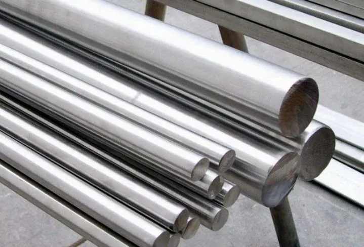
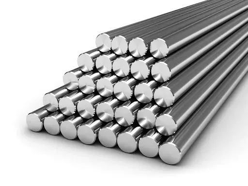

Work with different metals
Carbon Steel
Carbon steel is the most common variety of steel for manufacturing and smithing purposes alike. Carbon steels can range in their carbon composition. For example, low- to mild-carbon steels possess about 0.30% carbon, while high-carbon steels have over 0.61% carbon content. Due to these impurities and high-carbon content, high-carbon steels can be some of the hardest to forge and are also very brittle. However, they are still a popular choice for forging where strength is concerned. Because of their variety, these forms of steel are suitable for forging a variety of items.
Alloy Steel

Alloy steel is a combination of elements that enhance the basic properties of the steel structure, such as its strength, resistance, and ductility. When compared to carbon steel, alloy steel possesses a makeup that gives it increased strength, resistance, formability, and more, which makes this variety of steel easier to work with during the forging process. However, it may require special heating treatments in the process, and it can become brittle after working with it. Because of its added elements, this steel is also more expensive to work with.
Stainless Steel
Stainless steel has one major benefit over the stronger varieties of carbon steel — its resistance to corrosion. Another benefit of stainless steel is that it can actually be strengthened by the forging process. It can withstand elevated temperatures, but it still makes a great forging contender, especially as it strengthens during the process. However, this may make it difficult to work with for beginner blacksmiths, which is something to consider.